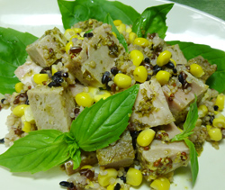

ローストポークのキヌアと
雑穀ソース和え
雑穀ソース和え
- 調理時間：30 分
- （一人当たり）
- カロリー：447kcal
- たんぱく質：22.5g
- 脂質：21.6g
- 塩分：1.8g

＜２人分＞
- 豚肉
- 200g
- オリーブオイル
- 大さじ1
- キヌア
- 大さじ1
- 赤米
- 大さじ1
- 黒米
- 大さじ1
- とうもろこし
- 50g
- マスタード
- 小さじ2
- 塩
- 少々
- コショウ
- 少々
バジル（飾り用）

- キヌアは茶こしで洗う。赤米、黒米も軽く洗う。キヌア、赤米、黒米はたっぷりの湯でやわらかくなるまでゆで、水気を切っておく。とうもろこしも湯がいて実をとっておく。
- 豚肉に塩、コショウを振り、油を敷いたフライパンでこんがりと中まで火を通し、いったん取り出す。
- 豚肉の油はそのまま、①の雑穀をフライパンに入れて炒める。塩、コショウで味をつけ、仕上げにマスタードを加えて火を止める。
- 一口大に切った豚肉をフライパンに戻し、③のソースと絡め合わせる。器に盛り付け、バジルを飾り出来上がり。
ローストポークのキヌアと雑穀ソース和え
雑穀と呼ばれる穀類が注目されています。中でも、キヌアはスーパーフードと呼ばれ、最近は、スーパーマーケットなどでも簡単に購入できるようになりました。
キヌアは昔からアンデス高地で暮らす人々の主食として食べられてきました。豊富なたんぱく質とビタミン、ミネラルを含むキヌアは、厳しい自然を生きぬく彼らの生活には、貴重な栄養源だったのでしょう。アメリカのNASAが「21世紀の主食」として推奨しているほど栄養価が高いことも理解できます。
雑穀を料理に使うのは、少し身構えてしまうかもしれませんが、ご飯と一緒に炊くだけでなく、今回のようにソテーのアクセントにしたり、サラダやスープなどもおすすめです。一度チャレンジしてみませんか。